THE BEAUTIFUL SOUND OF CLARINET
클라리넷은 어떤 악기일까요?
클라리넷은 목관악기에 속하는 관악기로, 리드(Reed)의 진동을 이용하여 소리를 만들어 냅니다.
부드럽고 따뜻한 저음부터 맑고 화려한 고음까지 폭넓은 음역을 표현할 수 있다는 특징이 있습니다.
오케스트라, 실내악, 재즈, 군악대 등 다양한 음악 분야에서 중요한 역할을 담당하고 있습니다.
클라리넷은 어떻게 탄생하고 발전했을까요?
독일의 악기 제작자 요한 크리스토프 데너가 샬뤼모(Chalumeau)를 개량하면서 초기 클라리넷이 탄생한 것으로 알려져 있습니다.
클라리넷의 음역과 표현력이 발전하면서 오케스트라와 다양한 실내악 작품에 사용되기 시작했습니다.
키 구조와 연주 방식이 개선되면서 더 정확하고 편리한 연주가 가능해졌습니다. 오늘날 사용하는 클라리넷의 기본 구조도 이 시기에 발전했습니다.
클래식뿐만 아니라 재즈와 대중음악 등 다양한 장르에서 클라리넷의 매력이 알려지기 시작했습니다.
현대에는 오케스트라, 독주, 실내악, 재즈, 관악 합주 등 폭넓은 분야에서 사랑받는 악기로 자리 잡았습니다.
클라리넷의 역사는 악기 구조와 연주 기술의 발전에 따라 계속 이어지고 있습니다.
클라리넷을 구성하는 주요 부품
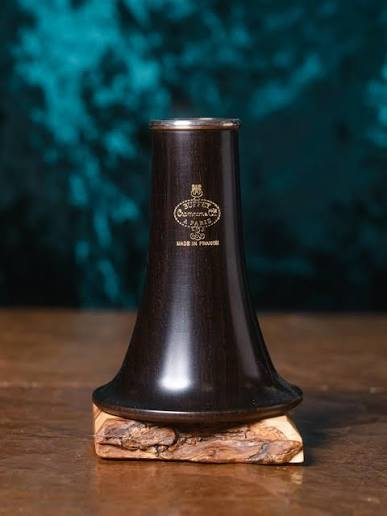
벨 · 소리를 내보내는 악기의 끝부분
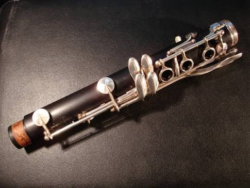
아래관 · 오른손으로 연주하는 부분
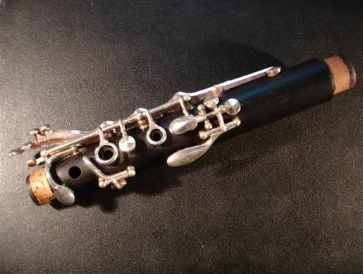
윗관 · 왼손으로 연주하는 부분
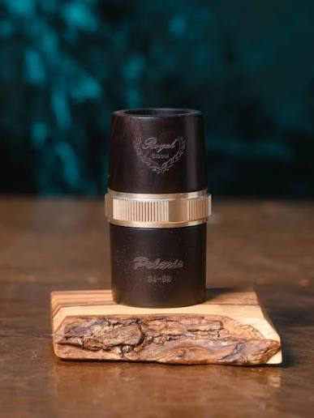
배럴 · 마우스피스와 윗관을 연결
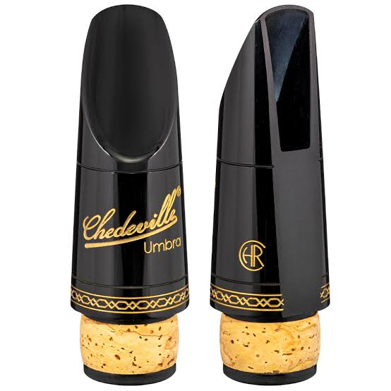
마우스피스 · 입으로 불어넣는 부분
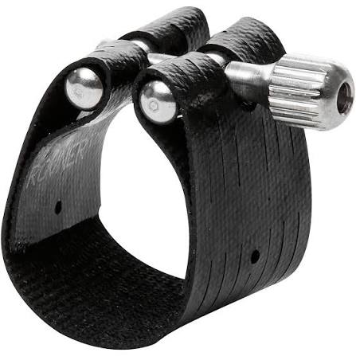
리가쳐 · 리드를 고정하는 장치
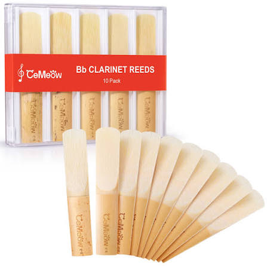
리드 · 진동을 통해 소리를 만드는 부분
다양한 종류의 클라리넷
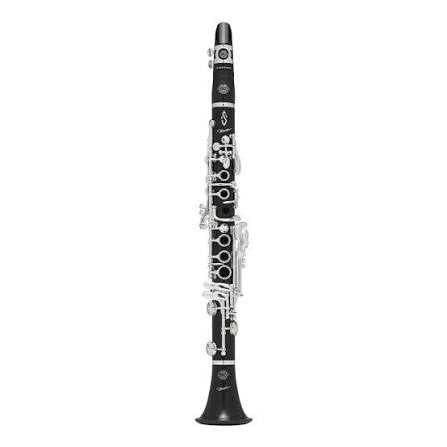
작은 크기와 밝고 높은 음역을 가진 클라리넷
가장 널리 사용되는 대표적인 클라리넷
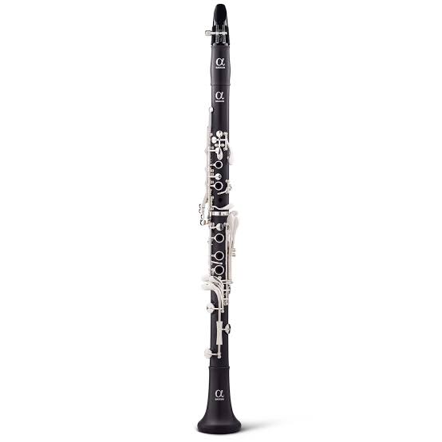
오케스트라에서 자주 사용되는 클라리넷
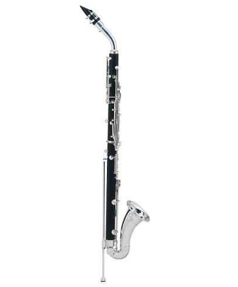
중저음역을 담당하는 부드러운 음색의 악기
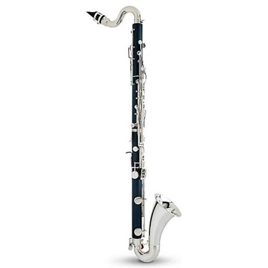
깊고 풍부한 저음이 특징인 클라리넷
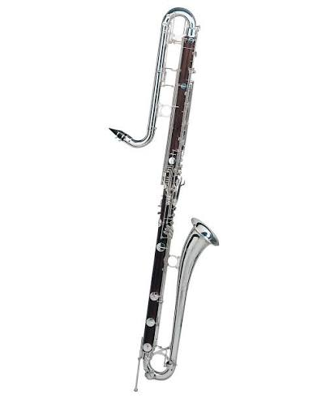
매우 낮은 음역을 담당하는 대형 클라리넷
클라리넷만의 특별한 매력
낮은 음부터 높은 음까지 넓은 음역을 표현할 수 있습니다.
부드럽고 따뜻하면서도 맑고 선명한 음색을 가지고 있습니다.
클래식부터 재즈까지 다양한 장르의 음악을 연주할 수 있습니다.
클라리넷으로 연주하는 아름다운 음악
클라리넷 연주에 필요한 악기와 액세서리
현재 상품 소개용 페이지이며 실제 구매 사이트와 연결되어 있지는 않습니다.
클라리넷을 배우고 싶으신가요?
처음 시작하는 입문자부터 실력을 향상시키고 싶은 연주자까지 클라리넷의 아름다운 세계를 경험해 보세요.
Contact Us클라리넷의 가장 아래쪽에 위치한 부분입니다. 악기 내부에서 만들어진 소리가 바깥으로 나오는 역할을 합니다.
아래관은 클라리넷의 하단 부분으로, 주로 오른손 손가락으로 키를 조작하여 음정을 조절합니다.
윗관은 클라리넷의 상단 부분으로, 주로 왼손 손가락으로 키를 조작합니다.
배럴은 마우스피스와 윗관을 연결합니다. 배럴의 길이를 조절하여 악기의 음정을 미세하게 조절할 수 있습니다.
마우스피스는 연주자가 입술로 물고 호흡을 불어넣는 부분입니다. 리드와 함께 클라리넷의 소리를 만들어 냅니다.
리가쳐는 리드를 마우스피스에 고정하는 부품입니다. 재질과 형태에 따라 연주감과 음색에 차이가 생길 수 있습니다.
리드는 갈대 재질로 만들어지는 얇은 판입니다. 연주자의 호흡에 반응해 진동하면서 소리를 발생시킵니다.
작고 가벼운 클라리넷으로, 밝고 날카로운 고음역이 특징입니다. 오케스트라에서 높은 음역을 담당합니다.
가장 널리 사용되는 표준적인 클라리넷입니다. 독주와 오케스트라, 실내악 등 다양한 분야에서 사용됩니다.
B♭ 클라리넷과 비슷한 크기이며, 주로 오케스트라에서 사용됩니다. 부드럽고 따뜻한 음색을 표현할 수 있습니다.
일반 클라리넷보다 크고 낮은 음역을 담당합니다. 관악 합주에서 중간 음역을 채워 줍니다.
깊고 풍부한 저음이 특징입니다. 관악 합주와 오케스트라에서 중요한 저음 역할을 담당합니다.
클라리넷 계열 중 매우 낮은 음역을 담당하는 대형 악기입니다. 웅장하고 깊은 저음을 표현합니다.
클라리넷은 다양한 음색과 넓은 음역을 가진 목관악기입니다. 연주자의 실력과 목적에 맞는 악기를 선택하는 것이 중요합니다.
배럴은 마우스피스와 윗관 사이를 연결하는 부품입니다. 길이와 재질에 따라 연주감과 음정 조절에 영향을 줄 수 있습니다.
리가쳐는 리드를 마우스피스에 고정하는 액세서리입니다. 다양한 재질과 디자인의 제품이 있습니다.
리드는 연주에 직접적인 영향을 주는 소모품입니다. 두께와 경도에 따라 연주감이 달라집니다.
리드 케이스는 리드를 안전하게 보관하기 위한 용품입니다. 리드가 휘거나 손상되지 않도록 보관하는 데 도움을 줍니다.